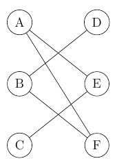
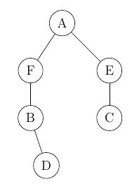
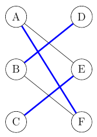
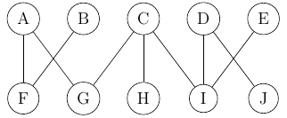
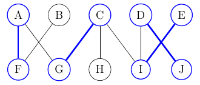
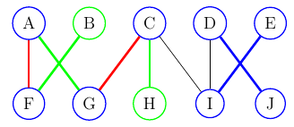
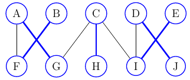

This is the algorithm that takes bipartite graph as an input and returns maximum cardinality matching. And now we can describe in detals what these terms mean. At first we take bipartite graph. This is such kind of graph where we can group nodes in two groups. Within the group, nodes do not have any edges. Such graph may look like following one:
As we can see, we have two groups, first one with nodes A,B,C and second one with nodes D,E,F. Of course, determining whether graph is bipartite and what are elements of the groups, is different problem. It does not have to be easy visible, especially with bigger graphs. But we could redesign graph above to see, it does not have to be clear at first glance.
Now, the second term that needs clarification is maximum cardinality matching. Definition says that it is set of as many edges as possible with the property that no two edges share an endpoint.

We are looking for subset of edges such, that each node has only maximum single edge attached, like edges marked blue in picture above.
Maximum matching means, that if we added one more edge to selected subset, the condition mentioned would be no more satisfied. Moreover, it is possible that there is more than one maximum matching.
There is one more term needed, namely augmenting path. By such path we simply mean a set of edges that starts and ends on "free" node, so node that is not attached to another already selected edge. Therefore at the beginning all edges are augmenting paths.
Algorithm is as follows:
Imagine that we are at some point in time of algorithm, where we selected marked edge, between nodes B and C. So, we have this edge and also both nodes B and C as selected ones. Our nodes A and D are therefore "free", not yet taken. So, this whole path, between A through B and C to D, is augmenting path f length 3.
It starts in "free" node A and ends in "free" node D. Moreover, edges on this path are alternating, at the beginning we have non-selected edge, then there is selected one followed again by non-selected. This could go on if we had more nodes and edges.
There are few important things to notice, first one, we always start and end with "free" node, so it has to mean that first and last edge are also non-selected ones (like in our small example). Second, in such augmenting paths number of edges that are not selected is 1 more than selected ones. Again this is like in our case, we have 1 edge selected and 2 not selected.
Third thing is that shortest augmenting path has length 1 and this is simply one edge between 2 "free" nodes. So, at the beginning of algorithm, where we did not select anything yet, we can say that each edge in graph is augmented path.
Now, before we go into detailed explanation of the algorithm, two more definitions need to be established. To be precise, we are talking about algorithms to go through the graph. They are breadth-first search (BFS) and depth-first search (DFS).
The best idea to show, how they works, is to present it on example. With DFS (depth - going deep), whenever we "visit" node, we go to its first not visited ancestor. Here, we have simple graph, where numbers denote order in which nodes are visited. First three steps are marked blue.
So, we start in node 1, then go to its direct ancestor 2. From there we go deeper to node 3. There are no nodes placed "deeper" therefore we "come back" and visit node 4. Now, we can go to other part of graph where procedure will be the same.
In BFS visiting nodes goes in different direction, so when we are visting node, we go at first to all its direct ancestors (breadth - we go wide), like marked in graph below. Similarly as above, first three steps are marked blue.
Ok, now we are ready to explain algorithm. But for that, we will need a little bit more complicated example. Therefore, we will use following graph.

In further description we will also use symbols U and V that define virtual groups of nodes. U consist of nodes A,B,C,D,E, whereas V will denote remaining ones.
As it was mentioned earlier, we start with empty set M and all edges are allowed to be selected. In first step we are applying BFS algorithm on nodes from one group, in our case group A. This means that we take each node and its first edge.
So in our case we will choose following:
Now, we can go to next step. We will look for augmented paths. As we remember, such path has to start in "free node". So, we can only start at one of nodes B, E, H or J - in other words, we start with nodes that were not selected in previous step.
For sake of simplicity, let us try to look for augmented paths of length 3. In previous step we covered all paths of lenght 1, so now this is minimum length of augmented path.
So, going to node B, we can see that there is no such augmented path here. We have "free" node B with its only edge, followed by selected edge from F to A, then we have again non-selected edge... but we end in node G, which is not "free". Hence, this path does not satisfy the definition.
Now, we go to node E, end there we can see that augmented path exists: \(E \rightarrow I \rightarrow D \rightarrow J\). Its length is 3.
Now what we do is as follows. We take such path, we remove from set M edges that are selected and put into M not selected edges. Here, we had in our set M, edge \(D \rightarrow I\). We take it out, and put E \(\rightarrow I\) and \(D \rightarrow J\) instead. We said before that augmented path has always one more non-selected edges comparing to selected ones. Therefore such operation will always increase size of our set M by 1. Like here, we had three elements at the beginning and now we have four.
Now, our selection looks differently, like following one:
Ok, we know we do not have any more augmented paths of lenght 3. But we can also see that some nodes are still not selected, so maybe there is a way forward. Indeed, if we look for path of length 5, we can find one: \(B \rightarrow F \rightarrow A \rightarrow G \rightarrow C \rightarrow H\). It starts in "free" node B, ends in "free" node H, and edges alternate between non-selected and selected ones. We do again the procedure of "switching" edges.
Now, we have no more "free" nodes left. This also means, we do not have anymore augmenting paths, cause such one has to start with "free" node. Therefore we finished our algorithm, selecting blue marked edges.
We can list these edges just to realise, that indeed each node shows only once. Edges are as follows:
Thanks to that, we have defined clear paths, with same source and target nodes, like \(U \rightarrow A \rightarrow F \rightarrow V\), etc.
So, in first step we use BFS, we visit child by child of our source node V, exactly like we did in our example. This way we find shortest paths of length 1.
In second step, we use DFS, so we take first non selected node, and go deep (towards target V) till we find proper augmenting path. In our example we presented seeking of paths of shortest length. But this was only for detailed explanation. In real implementation, we'd start at node B and go deep till we find augmented path, no matter what length (of course if there was one).
And this way we would find marked path, of length 5, like we actually did in previous description. But this time it was our first augmented path, as we did not limit the possible maximum length.